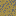
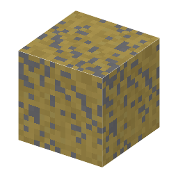

①子ども 地下深くにある、黄色っぽい金属の光の鉱石。ニッケルの原料。
②学生 (Fe,Ni)9S8。オーバーワールドの深い所（高さ -60〜0、深層岩の中）にできる。鉄のツルハシ以上で掘る。
③大人 地下深くのマグマが冷えるとき、鉄とニッケルの硫化物が重いので下に沈んでたまった（マグマの分離）。
④ガチ カナダのサドベリーは世界一のニッケル鉱山の一つ。約18億年前の隕石の衝突でできたくぼみにある。
（作り方のレシピは無い：拾う・掘る・ほかの方法）
（このアイテムを使うレシピは無い）